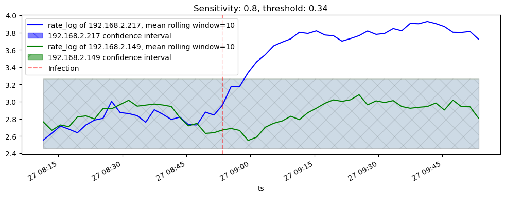
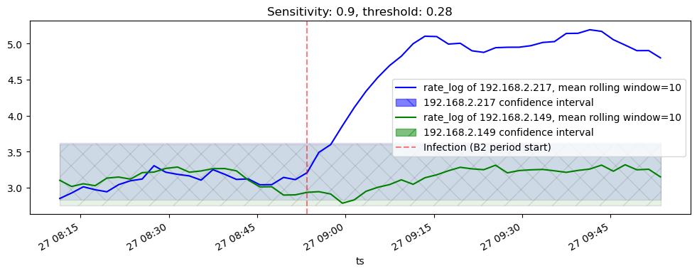

from detect_common import *21 Detect malware
The model deployment is done in two stages: I. tune the model, II. turn on the malware detection (on the data collected in B1 and B2 periods respectively, described in the timeline Figure 3.1)

21.0.1 Model selection
In experiment I we have seen that the model “RF normed-2-4-0-0” performed better than others. We will use this model in the current experiment.
Model description
- Random Forest classification model
- Normalization with RobustClassifier is enabled
- Model skips first 2 packets and next 4 packets are weighted for packet sizes statistics calculation
21.0.2 Stage I: Model tuning
On this state we fit the scaler on the data collected in B1 period, to be used later on the second stage
p1version = "v6"
p2version = "v7"
p3version = "v9"
p3version_exp1 = "v5"model = 'RF'
normed = True
skips_and_weights = [2,4,0,0]import dateutil.parser
df_b1 = pd.read_feather("cached/v9_1.ft")path_doh_ips_androids = basepath + "datasets/flubot20230323/data/v5_benign_doh_ips.csv"
path_doh_ips_general = "doh_resolver_ip.csv"
full_list = get_doh_ips(path_doh_ips_androids) + get_doh_ips(path_doh_ips_general)
cp = CacheableProcessing(100, 100, full_list)
df_b1_p = cp.process(df_b1, f"cached/v9_1.p3.{p3version}.cp.ft")from joblib import dump, load
name = (
('normed-' if normed else 'unnormed-') +
'-'.join(str(p) for p in skips_and_weights)
)
clf = load(f'models/{model}-mix-1-p-{name}.p1.{p1version}.p2.{p2version}.joblib')
model, name('RF', 'normed-2-4-0-0')results_df = pd.read_feather(f"cached/robustness.balanced_mix-results.p3.{p3version_exp1}.ft")
results_df["skips_and_weights"] = results_df["skips_and_weights"].apply(str)
model, normed, skips_and_weights_str, auc, fprs, tprs, thresholds = results_df[
(results_df["model"] == model) & (results_df["normed"] == normed) & (results_df["skips_and_weights"] == str(np.array(skips_and_weights)))
].iloc[0]pp_b1 = PreProcessing(normed, *skips_and_weights)
df_b1_pp = pp_b1.process(
df_b1_p,
f"cached/p3.{p3version}.pp.{model}-{name}.saved",
fit_new_scaler=True
)if not os.path.exists(f"cached/p3.{p3version}.pp.{model}-{name}.scaler"):
pp_b1.store_scaler(
f"cached/p3.{p3version}.pp.{model}-{name}.scaler"
)local_ips = df_b1[df_b1["ipaddr SRC_IP"].str.startswith("192.168")]["ipaddr SRC_IP"].unique().tolist()
local_ips['192.168.2.149', '192.168.2.217', '192.168.2.42']def predict(pp, clf, threshold, df_pp, df_orig):
"""
pp: PreProcessing object
clf: classifier
threshold: >=threshold for positive (DoH) class
df_pp: preprocessed dataframe
df_orig: unprocessed dataframe
"""
df_pp2 = df_pp.copy()
df_pp2["IsDoHPredicted"] = (clf.predict_proba(df_pp2[pp.feature_fields])[:,1] >= threshold).astype(bool)
df_orig2 = df_orig.copy()
# fill predicted to the original dataframe
df_orig2["IsDoHPredicted"] = df_pp2["IsDoHPredicted"]
# non-443 rows will be NaN, replace with False
df_orig2["IsDoHPredicted"] = df_orig2["IsDoHPredicted"].fillna(False)
return df_orig2def calc(df_n):
def rate(df_h):
dns_packets = df_h[df_h["IsDoHPredicted"] == True]["uint32 PACKETS"].sum() # outgoing packets
non_dns_ips = set(
df_h[df_h["IsDoHPredicted"] == False]["ipaddr SRC_IP"].unique()
).union(
# src and dst IPs could be stored in a reverse way.
# since number of internal IPs is limited, it's safe to account them all
set(
df_h[df_h["IsDoHPredicted"] == False]["ipaddr DST_IP"].unique()
)
)
rate = float(dns_packets) / (1.0 + len(non_dns_ips))
return {
"dns_packets": dns_packets,
"non_dns": len(non_dns_ips),
"rate": rate,
"rate_log": np.log(rate)
}
return pd.DataFrame(
{ ip: rate(grp) for ip, grp in df_n.groupby(["ipaddr SRC_IP"]) }
).T.reset_index()21.0.2.1 Build time-series forecast models for each host
freq = "2min"
behavior_ips_sens = {}
for sensitivity in [0.8, 0.9]: #, 0.95]:
print(sensitivity)
threshold = [threshold for tpr, threshold in zip(tprs, thresholds) if tpr >= sensitivity][0]
min_ts = df_b1["time TIME_FIRST"].apply(dateutil.parser.parse).min()
df_b1_pp_df = df_b1_pp[0]
behavior_ips = {}
for ip in local_ips:
print(ip)
df_b1_ip_pp = df_b1_pp_df[df_b1_pp_df["ipaddr SRC_IP"] == ip]
if len(df_b1_ip_pp) == 0:
continue
#df_b1_ip_pp["time TIME_FIRST"] = df_b1_ip_pp["time TIME_FIRST"].apply(dateutil.parser.parse)
# df_b1_ip_pp = df_b1_ip_pp.set_index("time TIME_FIRST")
df_b1_ip_pp_pred = predict(
pp_b1, clf, threshold, df_b1_ip_pp, df_b1[df_b1["ipaddr SRC_IP"] == ip]
)
df_b1_ip_pp_pred["time TIME_FIRST"] = df_b1_ip_pp_pred["time TIME_FIRST"].apply(dateutil.parser.parse)
# ignore last 5 mins
df_b1_ip_pp_pred_max = df_b1_ip_pp_pred["time TIME_FIRST"].max() # - pd.Timedelta(minutes=5)
df_b1_ip_pp_pred = df_b1_ip_pp_pred[df_b1_ip_pp_pred["time TIME_FIRST"] < df_b1_ip_pp_pred_max]
df_b1_ip_pp_pred = df_b1_ip_pp_pred.set_index(["time TIME_FIRST"])
df_resample = df_b1_ip_pp_pred.groupby(pd.Grouper(freq=freq, origin=min_ts)).first()
times = df_resample.index.tolist()
ranges = list(zip(times, times[1:]))
df_calcs = []
for ran in ranges:
df_ran = df_b1_ip_pp_pred[(df_b1_ip_pp_pred.index > ran[0]) & (df_b1_ip_pp_pred.index < ran[1])]
df_calc = calc(df_ran)
df_calc["ts"] = ran[0]
df_calcs.append(df_calc)
behavior_ips[ip] = df_calcs
behavior_ips_sens[sensitivity] = behavior_ips0.8
192.168.2.149192.168.2.217192.168.2.42
0.9
192.168.2.149192.168.2.217192.168.2.42from statsmodels.tsa.arima.model import ARIMA
forecast_models = {} # (sensitivity, ip addr) => time-series forecasting model
window_size = 10
def moving_average(x, w):
# https://stackoverflow.com/questions/14313510/how-to-calculate-rolling-moving-average-using-python-numpy-scipy
return np.convolve(x, np.ones(w), 'valid') / w
for sens, behavior_ips in behavior_ips_sens.items():
for ip, data_ips in behavior_ips.items():
rate_logs = np.array([
item["rate_log"][0] if len(item) else 0.0
for item in data_ips
])
forecast_model = ARIMA(
# rate_logs
moving_average(rate_logs, window_size)
).fit()
forecast_models[(sens, ip)] = forecast_model21.0.3 Stage II: Malware detection
On this state we turn on the malware detection, provisioning the model with the scaler trained before. For malware detection we use the data trained in B2 period.
df_b2 = pd.read_feather("cached/v9_2.ft")cp = CacheableProcessing(100, 100, full_list)
df_b2_p = cp.process(df_b2, f"cached/v9_2.p3.{p3version}.cp.ft")pp_b2 = PreProcessing(normed, *skips_and_weights)
pp_b2.load_scaler(
f"cached/p3.{p3version}.pp.{model}-{name}.scaler"
)
assert pp_b2._scaler
df_b2_pp, df_b2_pp_features, df_b2_pp_labels = pp_b2.process(
df_b2_p,
f"cached/b2.p3.{p3version}.pp.{model}-{name}.saved",
fit_new_scaler=False # use scaler trained in B1
)min_ts = df_b2["time TIME_FIRST"].apply(dateutil.parser.parse).min()
infection_ts = min_ts + pd.Timedelta(minutes=62) - pd.Timedelta(freq) * window_size
min_ts, infection_ts(Timestamp('2023-03-27 08:11:28.503294'),
Timestamp('2023-03-27 08:53:28.503294'))data = {}
for sensitivity in [0.8, 0.9]: #, 0.95]:
threshold = [threshold for tpr, threshold in zip(tprs, thresholds) if tpr >= sensitivity][0]
df_pred = predict(pp_b2, clf, threshold, df_b2_pp, df_b2)
data[sensitivity] = {
'df': df_pred, # dataframe with predicted values,
'threshold': threshold,
}21.0.3.1 Calculate ratio on the whole dataset: benign period (A1) and infected (A2)
for sensitivity, value in data.items():
print(sensitivity)
df_pred = value["df"]
local_df = df_pred[df_pred["ipaddr SRC_IP"].str.startswith("192.168")]
local_df["time TIME_FIRST"] = local_df["time TIME_FIRST"].apply(dateutil.parser.parse)
local_df_a1 = local_df[local_df["time TIME_FIRST"] < infection_ts]
local_df_a2 = local_df[local_df["time TIME_FIRST"] >= infection_ts]
print("sensitivity:", sensitivity, "A1")
display(calc(local_df_a1))
print("sensitivity:", sensitivity, "A2")
display(calc(local_df_a2))
0.8
sensitivity: 0.8 A1| index | dns_packets | non_dns | rate | rate_log | |
|---|---|---|---|---|---|
| 0 | 192.168.2.149 | 57817.0 | 1602.0 | 36.067998 | 3.585406 |
| 1 | 192.168.2.217 | 39406.0 | 1302.0 | 30.242517 | 3.409249 |
| 2 | 192.168.2.42 | 0.0 | 3.0 | 0.000000 | -inf |
sensitivity: 0.8 A2| index | dns_packets | non_dns | rate | rate_log | |
|---|---|---|---|---|---|
| 0 | 192.168.1.1 | 0.0 | 2.0 | 0.000000 | -inf |
| 1 | 192.168.2.149 | 75556.0 | 2041.0 | 37.000979 | 3.610944 |
| 2 | 192.168.2.217 | 170780.0 | 2221.0 | 76.858686 | 4.341968 |
| 3 | 192.168.2.42 | 0.0 | 4.0 | 0.000000 | -inf |
0.9sensitivity: 0.9 A1| index | dns_packets | non_dns | rate | rate_log | |
|---|---|---|---|---|---|
| 0 | 192.168.2.149 | 67599.0 | 1519.0 | 44.473026 | 3.794883 |
| 1 | 192.168.2.217 | 48515.0 | 1260.0 | 38.473434 | 3.649968 |
| 2 | 192.168.2.42 | 0.0 | 3.0 | 0.000000 | -inf |
sensitivity: 0.9 A2| index | dns_packets | non_dns | rate | rate_log | |
|---|---|---|---|---|---|
| 0 | 192.168.1.1 | 0.0 | 2.0 | 0.000000 | -inf |
| 1 | 192.168.2.149 | 91195.0 | 1954.0 | 46.647059 | 3.842610 |
| 2 | 192.168.2.217 | 446431.0 | 2127.0 | 209.789004 | 5.346102 |
| 3 | 192.168.2.42 | 0.0 | 4.0 | 0.000000 | -inf |
21.0.3.2 Split into time windows
local_ips = df_b2[df_b2["ipaddr SRC_IP"].str.startswith("192.168")]["ipaddr SRC_IP"].unique().tolist()
local_ips['192.168.2.149', '192.168.2.217', '192.168.2.42', '192.168.1.1']for sensitivity, value in data.items():
print(sensitivity)
df_pred = value["df"]
local_df = df_pred[df_pred["ipaddr SRC_IP"].str.startswith("192.168")].copy()
local_df["time TIME_FIRST"] = local_df["time TIME_FIRST"].apply(dateutil.parser.parse)
calc_ips = {}
a1_t = local_df.set_index(["time TIME_FIRST"])
df_resample = a1_t.groupby(pd.Grouper(freq=freq, origin=min_ts)).first()
times = df_resample.index.tolist()
ranges = list(zip(times, times[1:]))
df_calcs = []
for ran in ranges:
df_ran = a1_t[(a1_t.index > ran[0]) & (a1_t.index < ran[1])]
df_calc = calc(df_ran)
df_calc["ts"] = ran[0]
df_calcs.append(df_calc)
value["df_calc"] = pd.concat(df_calcs).reset_index(drop=True)0.80.9clean = "192.168.2.149"
infected = "192.168.2.217"We are using use ARIMA model to calculate confidence interval upper limit for outlier (malware) detection
import matplotlib.pyplot as plt
for sensitivity, value in data.items():
print(sensitivity)
fig, axs = plt.subplots(ncols=1, figsize=(12, 4))
df_calcs = value["df_calc"]
df_calcs_clean = df_calcs[df_calcs["index"] == clean].set_index("ts")
df_calcs_infected = df_calcs[df_calcs["index"] == infected].set_index("ts")
for host, df, color, hatch in zip(
[infected, clean],
[df_calcs_infected, df_calcs_clean],
['blue', 'green'],
['\\', '/'],
):
df_avgd = df.copy()
df_avgd_array = moving_average(df["rate_log"], window_size)
rate_log_ser = pd.Series(df_avgd_array, index=df_avgd["rate_log"].index[:len(df_avgd_array)])
rate_log_ser.plot(
label=f'rate_log of {host}, mean rolling window={window_size}',
ax=axs, color=color
)
if (sensitivity, host) in forecast_models:
forecast_model = forecast_models[(sensitivity, host)]
forecast = forecast_model.get_forecast(len(rate_log_ser))
yhat_conf_int = forecast.conf_int(alpha=0.05)
under_line = [v[0] for v in yhat_conf_int]
over_line = [v[1] for v in yhat_conf_int]
plt.fill_between(
rate_log_ser.index, under_line,
over_line, color=color, alpha=.1,
hatch=hatch, edgecolor='black'
)
plt.fill(
np.NaN, np.NaN, color=color, alpha=0.5,
label=f'{host} confidence interval', hatch=hatch
)
plt.axvline(
x=infection_ts, label="Infection", color="red", linestyle='--', alpha=0.5
)
# plt.ylim(ymin=0)
plt.title(f"Sensitivity: {sensitivity}, threshold: {value['threshold']}")
plt.legend()
plt.show()0.8
0.9